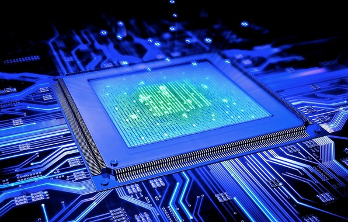
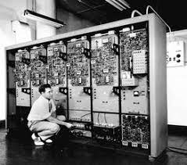
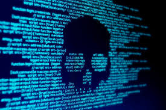
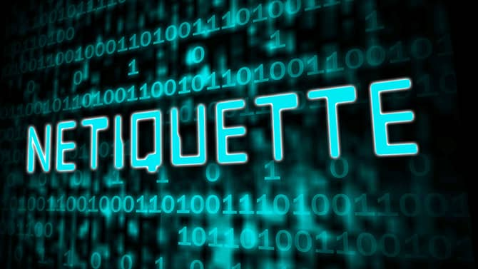

Capitolo 1
Indice
link interni
Cos'è l'informatica
l'informatica nella storia
Aspetti positivi e negativi
Il comportamento in rete

L’Informatica: la Scienza
è una scienza che ha causato la Quarta Rivoluzione Industriale.
L’Informatica ha portato delle tecnologie avanzate, cambiamenti nel lavoro, ma anche rischi.
L’informatica deriva dalle due parole Informazione e Automatica e permette di elaborare delle informazioni scritte in Codice Binario.
Le informazioni sono visibili come file, i file sono Immagini, Video, Audio, Testi che possono essere Creati, Modificati, Salvati, Eliminati o Condivisi.
torna al inizio

L’Informatica: La Storia
L’Informatica è iniziata nel 1940 grazie ad Alan Turing, un matematico inglese, che ha creato la prima macchina calcolatrice meccanica (un programma) per decodificare i messaggi delle truppe tedesche in modo automatico.
Il primo computer Mainframe nel 1957.
Il primo personal computer nel 1981
torna al inizio
Aspetti positivi e negativi

Con la tecnologia informatica si può imparare attraverso E-learning che è molto più veloce, si può giocare, comunicare in remoto.
Gli aspetti negativi sono vari: si può essere attaccati da virus, scoprire i propri dati personali, essere presi di mira da altri utenti e così via.
torna al inizio
Il comportamento in rete

Per essere dei cittadini digitali, quindi per stare in rete, bisogna saper comportarsi bene in rispetto degli altri.
Bisogna saper riconoscere le fake news, bisogna avere delle nuove conoscenze e bisogna fare un uso giusto delle tecnologie informatiche.
torna al inizio
Torna al indice